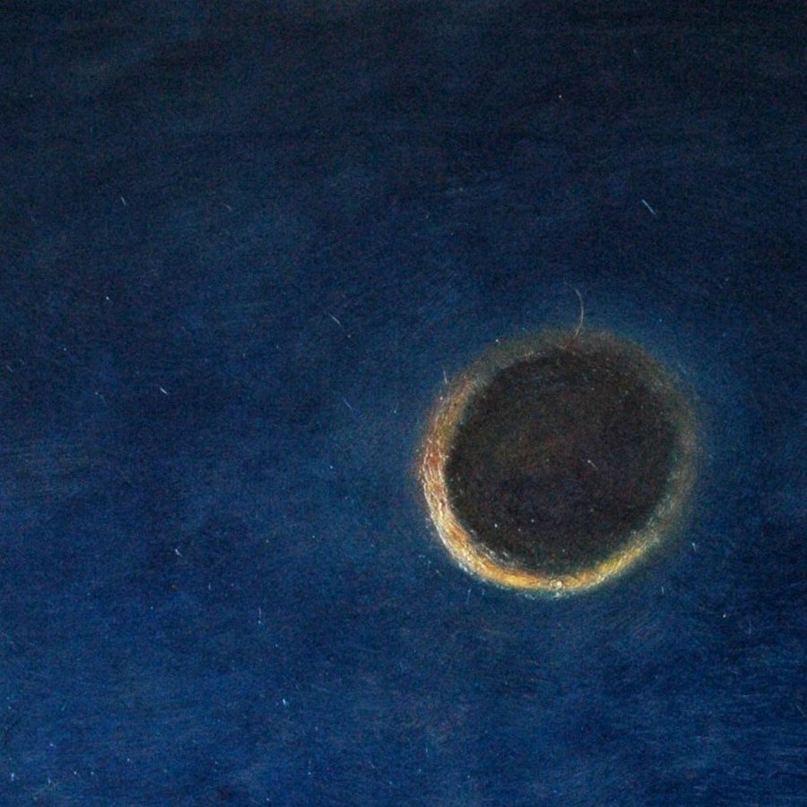

Riot

I saw (...)
angelheaded hipsters burning for the ancient heavenly
connection to the starry dynamo in the machinery of night
(Allen Ginsberg)
Barcellona, Amsterdam, Firenze, Barcellona…
Andrea Lucchesi ha incontrato questi angeli caduti, durante un viaggio lungo quasi una vita. La sua, giovane e densa, di chi ha deciso che pittura e esistenza sono la stessa cosa, che fare arte lascia poco spazio alla normalità. Anche lui è uno di questi volti. O forse è in ciascuno di loro, figure dai contorni netti eppure profondamente malinconiche, che sembrano avere tutte i suoi occhi. Occhi vividi e ansiosi, che si ancorano come un gancio alle tue emozioni, alle paure e alle incertezze quasi a volerle strappar via. Per portarle dove? Verrebbe da chiedere. Da nessuna parte in realtà, sono lì solo per dimostrarti che anche tu che guardi non sei più solido dell’umanità vinta e persa che dipinge Andrea. Eppure tutta questa sofferenza, questo dolore raccontato con pennellate impeccabili ti fa sentire vivo. E nelle tele che ti scorrono davanti cerchi ancora quegli occhi. Con cui condividere, in cui vedere te stesso. Ed è proprio passando da una tela alla successiva, che questi sfondi materici e vischiosi iniziano a muoversi. Non più superfici piatte, ma quinte mobili dove va in scena lo spettacolo della vita. Se il colore può essere pura poesia, il non colore è un sussulto. La palette di Andrea è una gamma di grigi, di verdi che sembrano grigi, di neri, di neri che sembrano grigi… Improvvisi irrompono il blu, il rosso. Il giallo di una luna netta come una lama, nel suo autoritratto.
Pigmenti a secco e grafite su fogli su cui si è sedimentato il trascorrere del tempo, sporcati dalla contingenza delle cose, dal susseguirsi accidentale degli avvenimenti. Questa è la base da cui parte Andrea, l’incipit per raccontare questi incontri e parlare dell’ ”umanità delle cose” a lui cara.
Lo fa con una dedizione maniacale, una componente mistica da pittore antico. Il contrasto ora appare stridente: la figura sottile e nervosa dell’artista da un lato, l’immobilità dei vinti che lui stesso ritrae dall’altro. Ascetismo e perdita del sé. Ma basta tornare a quegli occhi, che scandiscono con ritmo incessante l’umanità del quotidiano che appartiene a ognuno di noi, per capire che qui non c’è nessun contrasto, nessuna rottura tra l’artista e l’uomo.